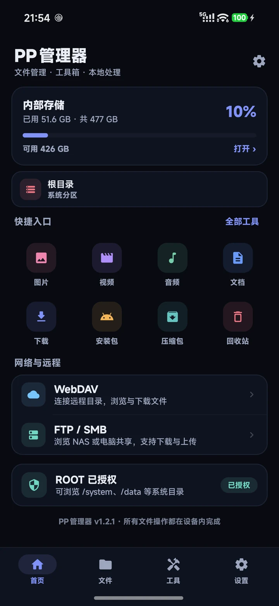
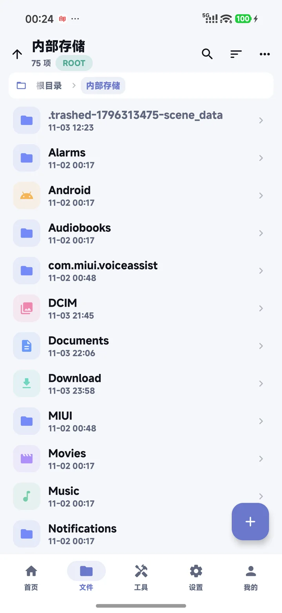
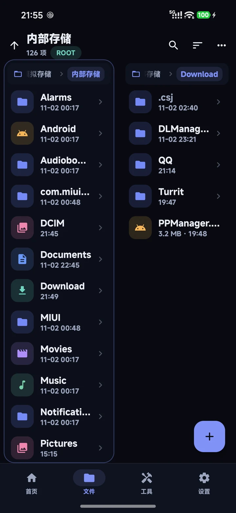
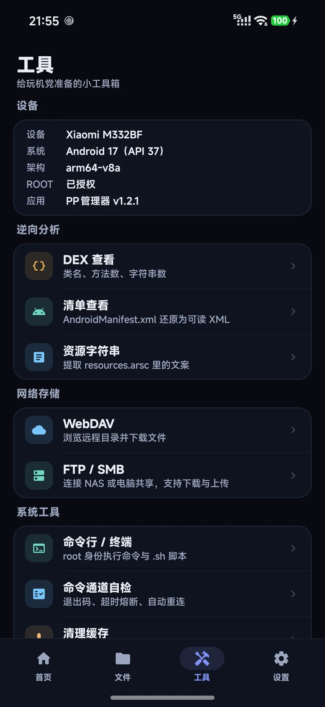

双窗口 + 多标签
两个目录同屏显示，各自独立标签和历史。复制、移动、对比不用来回跳，跨目录操作一步完成。
dual-pane
一个用 Kotlin + Jetpack Compose 手写的 Android 文件管理器。
双窗口、全盘与 ROOT、压缩包全格式、APK 逆向查看、终端、网络存储，装一个就够了。

不是把十个 App 塞进一个壳，而是把文件管理、压缩包、逆向查看、终端和网络存储都做扎实。
两个目录同屏显示，各自独立标签和历史。复制、移动、对比不用来回跳，跨目录操作一步完成。
dual-pane「所有文件访问权限」覆盖整个存储；ROOT 后直接读写 /system、/data，改权限、看系统目录。
ZIP、TAR、TAR.GZ、TGZ、GZ、7Z、RAR 直接浏览和解压；选中文件可一键压缩为 ZIP。
zip · 7z · rar · tarAPK 签名 V1/V2/V3、证书指纹、DEX 类与方法统计、AndroidManifest 还原、resources.arsc 字符串、Hex。
DEX · AXML · ARSC全屏终端，root / 普通模式切换，流式输出、历史命令、停止与重连；.sh 直接执行，支持 read 输入。
连接 NAS 或电脑共享：FTP、SMB 2/3 浏览、下载与上传；WebDAV 浏览与下载。凭据只在本机。
FTP · SMB · WebDAV深色是默认主题，也可以跟随系统或切到浅色。点开图片可以看大图。



文件只在你和设备之间流动。只有你主动连接 FTP / SMB / WebDAV 时才会联网，没有云端、没有账号、没有统计 SDK。
双窗口、多选、批量重命名、文件对比、回收站，都是为“一次处理很多文件”准备的，而不是只做一个好看的列表。
5.5 MB，无广告、无推送、无后台常驻服务。用 Kotlin + Compose 写，遵循 Material 3，跟随系统深浅色。
免费使用，Apache-2.0 许可。直接下载 APK，不需要安装器或应用商店。
95bd02f8b078ceea5e2f45ec150c6c5e4300c821fea82e94533954847f7a9aef
下载后如果系统提示“未知来源”，需要在浏览器或文件管理器里允许安装未知应用。 APK 使用开发者本地签名，升级时直接覆盖安装即可。
PP管理器没有付费墙：文件管理、ROOT、压缩包、逆向查看、终端、网络存储，所有人都能用。¥9.9 是一次性赞助，不是功能解锁，也不会自动续费。
完整历史见仓库的 CHANGELOG.md。这里只列用户能感知的变化。
不需要。日常的文件浏览、复制、压缩、查看、网络存储都能在普通模式下完成。ROOT 只用于读写 /system、/data 等系统分区，以及修改系统文件权限。
Android 11 之后普通存储权限无法完整访问 Android/data、外置 SD 卡等目录。PP管理器用 MANAGE_EXTERNAL_STORAGE 做完整的本地文件管理；如果你只需要访问公共目录，也可以拒绝，再用 SAF 单独授权某个文件夹。
默认会移入应用内的「回收站」，可以在首页的回收站入口恢复。也可以在设置里关闭「删除时移入回收站」，或关闭「删除前二次确认」。
支持 FTP、SMB 2/3 和 WebDAV。FTP 与 SMB 可以浏览、下载、上传；WebDAV 目前支持浏览与下载。FTP 是明文协议，建议只在局域网使用。
不会上传文件内容。App 没有云端、没有账号系统；赞助卡密只在本机验签，不会联网。App 和本站都没有第三方统计 SDK。
没有关系。所有功能永久免费，不赞助也能用。¥9.9 是一次性赞助，只获得永久金色徽章、赞助日期和优先反馈，不是功能解锁，也不会自动续费。
在发卡平台购买后会收到一个 PP1. 开头的长卡密。打开 App →「我的」→ 粘贴卡密即可，立即显示金色赞助者界面。卡密不绑定设备，换机或重装后重新输入同一张卡密即可恢复；请保存在密码管理器或发卡平台订单里，丢失无法自动找回。
不需要账号。所有功能都在本机使用；赞助也只需要在 App 里输入卡密，不注册、不登录。
项目采用 Apache-2.0 许可，源码目前托管在私有仓库，后续会考虑公开。你可以通过 GitHub 主页联系作者。